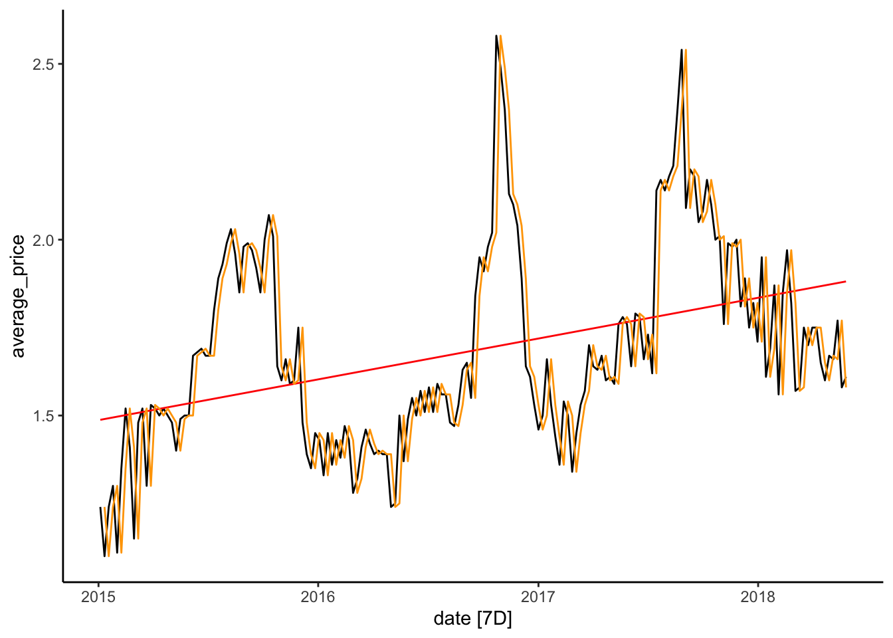
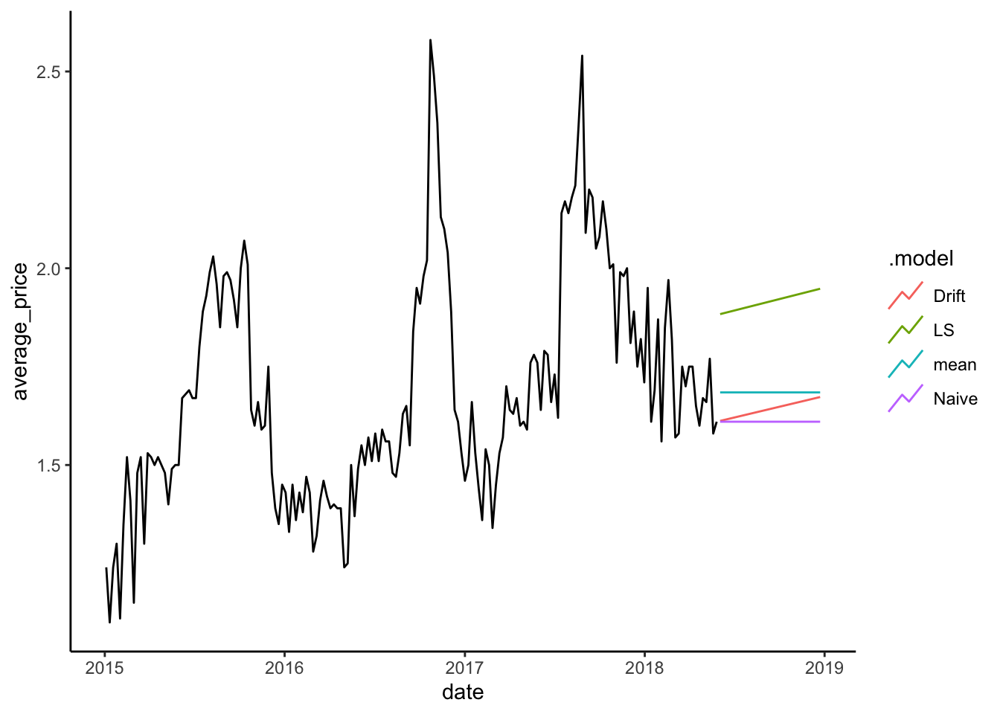
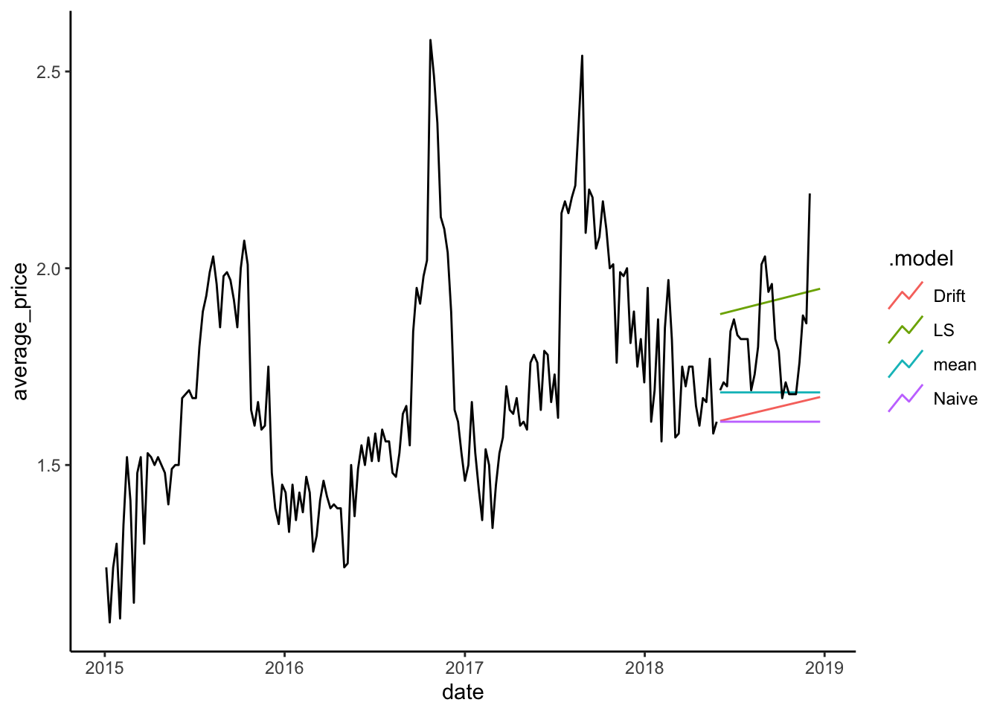

library(tidyverse)
library(fpp3)
cali<-read_csv("https://jagelves.github.io/Data/CaliforniaAvocado.csv")5 Model Benchmarks
This module will introduce the modeling procedure with four different benchmarks (Naive, Drift, Mean, and Least Squares). The fit of these benchmarks will be assessed using accuracy measures such as the Mean Error, Mean Absolute Error, Root Mean Squared Error, among others. In general, these accuracy measures compare the fitted values with observed values. A good model will account for most of the series’s systematic variation, leaving a small random error. Lastly, to avoid over-fitting the models, we will use a training set and test set along with cross validation.
5.1 Benchmarks
One of the most intuitive (but naive) predictions we can make about the future is to expect that the value of a variable will behave as it did in the past. A naive prediction sets the prediction of a future period to the value of the preceding period. For example, if you consider the task of predicting your weight, a simple heuristic would be to think that your weight tomorrow be the same as the weight observed today. Mathematically we would write:
where \(\hat y_{T+h}\) is the predicted value for \(h\) periods ahead, and \(y_T\) is the value observed at the current time period \(T\). We can adjust the Naive prediction by accounting for some natural drift (an increase or decrease). Thinking about weight once again, we note that as kids grow, we expect their weight to be close to the previous measurement but slightly higher as we need to account for growth. We would “drift” the naive prediction upward. Mathematically we would write:
where \(h(\frac{y_t-y_1}{T-1})\) can be thought as the average increase of \(y\) from period \(1\) to the current period \(T\). One could also predict weight by observing weight during a period and averaging the values. Every day the data recorded would be slightly different, but if diets, exercise, sleep, etc., remain relatively constant, the mean could be a good predictor of your future weight. Formally:
Lastly, we can use the weight data collected from a period and observe if there is any trend. If we find ourselves motivated to lose weight we can start recording our weight every day. Ideally, we will start seeing the effect of our diet, exercise and healthy sleep in the data. We can predict tomorrows weight by taking into account the downward trend of our weight. Formally:
5.2 Modeling the the Average Price of Avocados
Let’s apply these four models to forecast the average price of avocados in California. We’ll start by loading the tidyverse and fpp3 packages and importing the data.
Recall that we can create a tsibble from the csv file using the as_tsibble() function. The index argument is set to the weekly date variable and the key argument to geography. The filter_index() function is used to focus our analysis for 2015-01-04~2018-06-02 with 2018-06-02 not being included.
cali %>%
as_tsibble(key=geography,index=date,regular=T) %>%
filter_index("2015-01-04"~"2018-06-02") -> calits_trainNow we can use the model() function to run the benchmarks discussed in Section 5.1. We have saved the models to an object called fit.
fit <- model(calits_train,mean=MEAN(average_price),
Naive=NAIVE(average_price),
Drift=RW(average_price~drift()),
LS=TSLM(average_price~date))The fit object is saved as a mable (model table). The model()function specifies the four models to be estimated using their respective functions (i.e., MEAN(), NAIVE(), RW(), and TSLM()). To explore the coefficients of the models estimated, we use the coef() function with fit as its single argument. The output table has been enhanced visually by using the gt package.
library(gt)
coef(fit) %>%
gt() %>%
cols_align("center") %>%
tab_header(title = md("**Model Coefficients For The Avocado Data**")) %>%
tab_style(
locations =cells_column_labels(columns = everything()),
style = list(cell_borders(sides = "bottom", weight = px(3)),
cell_text(weight = "bold"))) %>%
fmt_number(columns =c(statistic,estimate,std.error,p.value),
decimals = 4)| Model Coefficients For The Avocado Data | ||||||
| geography | .model | term | estimate | std.error | statistic | p.value |
|---|---|---|---|---|---|---|
| California | mean | mean | 1.6845 | 0.0212 | 79.3980 | 0.0000 |
| California | Drift | b | 0.0021 | 0.0104 | 0.2010 | 0.8410 |
| California | LS | (Intercept) | −3.7322 | 0.9230 | −4.0438 | 0.0001 |
| California | LS | date | 0.0003 | 0.0001 | 5.8702 | 0.0000 |
The table records the estimates and p-values for all the benchmarks discussed in Section 5.1. The Naive model has no entry, as the forecast is created by using the previous period’s observed value. Note as well that the Drift and LS models select a positive slope to account for the trend. Below we illustrate the fit of the Mean model by a dashed blue line, the Least Squares model by the red line and the Naive model by the orange line.
calits_train %>% autoplot(average_price) + theme_classic() +
geom_line(aes(y = .fitted), col="red",
data = augment(fit) %>% filter(`.model`=="LS")) +
geom_line(aes(y = .fitted), col="orange",
data = augment(fit) %>% filter(`.model`=="Naive")) +
geom_line(aes(y = .fitted), col="blue", linetype="dashed",
data = augment(fit) %>% filter(`.model`=="mean")) +
labs(y="", title= "California's Average Price Of Avocados",
subtitle = "Jan 4, 2015 - May 27, 2018",
x="")
The graph illustrates how closely the Naive model follows the data. This might seem like a good model, but consider how the heuristic makes a mistake every period. Since average prices are constantly changing every week, predicting the previous value always results in an error. Critically, the Naive prediction does not explain the series governing process. The LS model, on the other hand, provides some insight into a force that is influencing the data—a rising trend. We can use characteristics such as a trend or seasonality to forecast a series effectively.
5.3 Model Fit
The model fit will be assessed by comparing the fitted values against observed values. In general, a good fit is determined by how far the fitted values are from the observed ones. If we square all of the distances between actual points and predicted values (i.e., errors) and then average them, we calculate the Mean Squared Error (MSE).
How we decide to aggregate our errors will determine our measure of accuracy. For example, if we follow the same procedure as the one for MSE’s but instead find the square root, we have calculated the RMSE. Below you will find a collection of accuracy measures for our benchmarks. You will notice that the Naive method provides the best results since all the accuracy metrics are the smallest. We highlighted these results and made the table more appealing using the gt library.
accuracy(fit) %>%
gt() %>%
cols_align("center") %>%
tab_header(title = md("**Model Fit**")) %>%
tab_style(locations = cells_column_labels(columns = everything()),
style = list(cell_borders(sides = "bottom", weight = px(3)),
cell_text(weight = "bold"))) %>%
fmt_number(columns =c(ME,RMSE,MAE,MPE,MAPE,MASE,RMSSE,ACF1),
decimals = 2) %>%
tab_style_body(
style = cell_fill(color="lightgreen"),
values = "Naive",
targets ="row")| Model Fit | ||||||||||
| geography | .model | .type | ME | RMSE | MAE | MPE | MAPE | MASE | RMSSE | ACF1 |
|---|---|---|---|---|---|---|---|---|---|---|
| California | mean | Training | 0.00 | 0.28 | 0.23 | −2.71 | 13.59 | 2.26 | 2.05 | 0.87 |
| California | Naive | Training | 0.00 | 0.14 | 0.10 | −0.19 | 6.04 | 1.00 | 1.00 | −0.21 |
| California | Drift | Training | 0.00 | 0.14 | 0.10 | −0.31 | 6.05 | 1.00 | 1.00 | −0.21 |
| California | LS | Training | 0.00 | 0.26 | 0.21 | −2.21 | 12.23 | 2.07 | 1.87 | 0.85 |
5.4 Forecast
The forecast of the series is obtained by using the forecast() function and specifying the number of periods (\(h\)) ahead to forecast. Below we forecast \(27\) weeks and save the result in an object called calits_fc.
calits_fc <- fit %>% forecast(h=27)The autoplot() and autolayer() functions are used below to create a graph with the forecasts and the training set. The argument level is set to NULL to omit the prediction intervals.
calits_fc %>% autoplot(level=NULL) + theme_classic() +
autolayer(calits_train, average_price) +
labs(y="", title= "California's Forecasted Average Price Of Avocados",
subtitle = "Jan 4, 2015 - Dec 2, 2018",
x="")
Note how the Mean and Naive models predict that the series will continue without a trend. The LS and Drift models predicts that the series will continue its trend but, like all other methods, do not consider the seasonal pattern discussed in Section 4.5. In future chapters, we will look at models that account for both trend and seasonality.
5.5 Over-Fitting
Over-fitting can happen when a model is overly flexible. This can make the model fit to the random fluctuations or noise in the data, rather than the underlying pattern. This is a major failing in modeling as it ignores the systematic pattern that governs the time series.
To overcome this problem, we usually have a training set or subset of the data that we use to estimate the model’s parameters. Once the model is estimated, we assess its performance on a new subset of the data that was not used in estimating the model. This second subset of data is called the test set. A model that over-fits to the training data, will often perform poorly when forecasting the test set.
Recall that benchmarks were estimated for the period between 2015-01-04~2018-06-02. We will call this our training set. For our test set, we’ll use the 2018-06-02~2018-12-02 period. The code below creates the test set using the filter_index() function.
cali %>%
as_tsibble(key=geography,
index=date, regular=T) %>%
filter_index("2018-06-02"~"2018-12-02") -> calits_testNow we can plot the training set, the forecast, and the test set by using the code below.
calits_fc %>% autoplot(level=NULL) +
theme_classic() +
autolayer(calits_train, average_price) +
autolayer(calits_test, average_price)
The graph shows how the LS method does well with the test data and a long forecast period. This can be confirmed by obtaining the accuracy measures against the test set. The code below uses the accuracy() function to generate the main table.
accuracy(calits_fc, calits_test)| Model Fit | ||||||||||
| .model | geography | .type | ME | RMSE | MAE | MPE | MAPE | MASE | RMSSE | ACF1 |
|---|---|---|---|---|---|---|---|---|---|---|
| Drift | California | Test | 0.17 | 0.21 | 0.17 | 9.24 | 9.24 | NaN | NaN | 0.52 |
| LS | California | Test | −0.10 | 0.16 | 0.14 | −5.88 | 7.78 | NaN | NaN | 0.52 |
| Naive | California | Test | 0.20 | 0.24 | 0.20 | 10.85 | 10.85 | NaN | NaN | 0.50 |
| mean | California | Test | 0.13 | 0.18 | 0.13 | 6.72 | 6.85 | NaN | NaN | 0.50 |
Interestingly, the Naive method is no longer the best model since it will always predict the series’ previous value regardless of how many periods we forecast. On the other hand, the LS model correctly uses the deterministic trend to forecast the future. Trends are useful in predicting time series.
5.6 Cross Validation
Instead of selecting a single training set and test set, we can create several. Specifically, we could take the first three observations of our time series and define them as the training set. We can then estimate a model and forecast the fourth (or nth) observation. The forecast error is recorded and the training set is changed so that now the first four observations are used to estimate the model and forecast the fifth (or nth) observation. This procedure is repeated as many times as the data allows. Below we create a table that enables us to follow the cross-validation of our benchmarks.
avocado_cv <- calits %>%
select(-geography, -total_volume) %>%
stretch_tsibble(.init = 3, .step = 1)stretch_tsibble() is a handy function that creates a variable called id that is initialized with the .init argument. In this case, the first three observations are given \(id=1\). The id then changes with a step of \(.step=1\). That is, \(id=2\) for the first four observations, then \(id=3\) for the first five observations, and so on. Below is a sample of the tsibble.
| CV tsibble | ||
| date | average_price | .id |
|---|---|---|
| 2015-01-04 | 1.24 | 1 |
| 2015-01-11 | 1.10 | 1 |
| 2015-01-18 | 1.24 | 1 |
| 2015-01-04 | 1.24 | 2 |
| 2015-01-11 | 1.10 | 2 |
| 2015-01-18 | 1.24 | 2 |
| 2015-01-25 | 1.30 | 2 |
| 2015-01-04 | 1.24 | 3 |
Using this new tsibble, the benchmarks are estimated for each id and forecasts are generated for four periods ahead (\(h=1\)). The accuracy is measured and averaged across all iterations for each model. Results are shown in the table below.
avocado_cv %>%
model(Mean=MEAN(average_price),
Naive=RW(average_price),
Drift=RW(average_price ~ drift()),
LS=TSLM(average_price~date)) %>%
forecast(h = 1) %>% accuracy(calits) %>%
gt() %>%
cols_align("center") %>%
tab_header(title = md("**Model Fit Cross Validation**")) %>%
tab_style(locations = cells_column_labels(columns = everything()),
style = list(cell_borders(sides = "bottom", weight = px(3)),
cell_text(weight = "bold"))) %>%
fmt_number(columns =c(ME,RMSE,MAE,MPE,MAPE,MASE,RMSSE,ACF1),
decimals = 2) %>%
tab_style_body(
style = cell_fill(color="lightgreen"),
values = "Naive",
targets ="row")| Model Fit Cross Validation | |||||||||
| .model | .type | ME | RMSE | MAE | MPE | MAPE | MASE | RMSSE | ACF1 |
|---|---|---|---|---|---|---|---|---|---|
| Drift | Test | 0.00 | 0.14 | 0.10 | −0.42 | 5.77 | 1.01 | 1.01 | −0.19 |
| LS | Test | −0.05 | 0.26 | 0.20 | −4.59 | 11.63 | 2.03 | 1.91 | 0.84 |
| Mean | Test | 0.12 | 0.27 | 0.20 | 5.51 | 11.11 | 2.10 | 2.05 | 0.84 |
| Naive | Test | 0.00 | 0.13 | 0.10 | −0.02 | 5.65 | 1.00 | 1.00 | −0.19 |
The Naive method performs the best when forecasting one period ahead. However, we note once again that the Naive method will provide the same forecast for one, two, three or more periods ahead. You can confirm that this model would lose its appeal when predicting three or four periods ahead. Most importantly, there is no formal model telling us how data is generated.
5.7 Other Accuracy Measures
AIC (Akaike Information Criterion), AICc (corrected AIC), and BIC (Bayesian Information Criterion) are commonly used measures of model accuracy or goodness of fit in statistical modeling. They are used to compare different models and select the one that best balances model complexity (number of parameters estimated) and fit.
- AIC is a measure that penalizes model complexity. It balances the trade-off between model fit and the number of parameters in the model. The AIC value is calculated using the formula:
In this formula, the log-likelihood represents how well the model fits the data, and the number of parameters (\(k\)) accounts for the complexity of the model. The lower the AIC value, the better the model.
AICc is an adjustment to the AIC measure, particularly for smaller sample sizes. AIC tends to overestimate the complexity penalty when the number of data points is relatively small. AICc adds a correction factor to account for this and is calculated using the formula:
\(AICc = AIC + (2 * k * (k + 1)) / (n - k - 1)\)
Here, \(k\) represents the number of parameters, and \(n\) is the sample size. AICc provides a more accurate measure of model fit in situations where the sample size is small. Similarly, lower AICc values indicate better model fit.
BIC, also known as Schwarz Information Criterion (SIC), is another measure that penalizes model complexity. BIC is based on Bayesian principles and provides a stronger penalty for model complexity compared to AIC. The BIC value is calculated using the formula:
\(BIC = -2 * log-likelihood + log(n) * k\)
In this formula, log-likelihood represents the model fit, \(n\) is the sample size, and \(k\) is the number of parameters. BIC puts a greater emphasis on simplicity compared to AIC.
These measures can be easily calculated in R using the report() function. The code below estimates the ETS and ARIMA models (which we will learn in the upcoming modules) for illustration purposes since the Naive and Mean models are non-parametric and do not provide us with an AIC, AICc, or BIC.
calits_train %>%
model(LS=TSLM(average_price~trend()),
ETS=ETS(average_price),
LS2=ARIMA(average_price))%>%
report() %>%
select('.model',"AIC","AICc","BIC")| Model Fit Information Criterion | |||
| .model | AIC | AICc | BIC |
|---|---|---|---|
| LS | −476.14 | −476.01 | −466.60 |
| ETS | 203.26 | 203.39 | 212.80 |
| ARIMA | −205.83 | −205.76 | −199.48 |
The model with the lowest AIC (AICc or BIC) is the simple Least Squares model that only has two parameters to estimate (slope and intercept). These results indicate that LS provides a good fit relative to it’s complexity.
5.8 Readings
Hyndman (2021) Chapter 5 (The Forecaster’s Toolbox).
gt package: https://gt.rstudio.com
5.9 Leasons Learned
In this module you have been introduced to the general procedure in forecasting time series. Particularly you have learned to:
Create forecasts with simple heuristics.
Assess the fit of the model with accuracy measures.
Create a test set and train set to avoid over-fitting.
Perform cross validation.
Select models with the AIC, AICc or BIC.